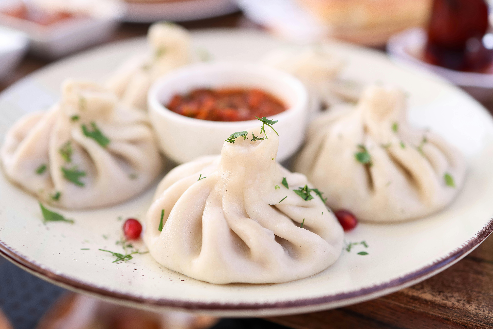

Dumplings

consisten en unas pequeñas masas rellenas de distintos ingredientes parecidas a una empanada que pueden clasificarse dependiendo del relleno o de la forma. Las masas suelen elaborarse con harinas de distintos tipos como trigo, arroz y tapioca.
INGREDIENTES:
- 500 gramos (4 tazas / 18 onzas) de harina para todo uso
- 265 mililitros (1 taza más 2 cucharadas / 9 onzas) de agua (a temperatura ambiente)
- Alrededor de 4 tazas de relleno para bolas de masa, preferiblemente
Pasos para preparar los Dumplings
- Masa: Mezcla harina y sal, añade agua tibia poco a poco amasando hasta obtener una masa suave y lisa. Cubre y deja reposar 30 min.
- Relleno: Mezcla todos los ingredientes del relleno hasta que la carne esté pegajosa.
- Montaje: Estira la masa y corta círculos. Coloca una cucharada de relleno en el centro, humedece los bordes y sella formando pliegues.
- Calienta aceite en un sartén, dora los dumplings 2-3 min. Añade 1/4 taza de agua, tapa y cocina a vapor 10-15 min hasta que el agua evapore
Regresar